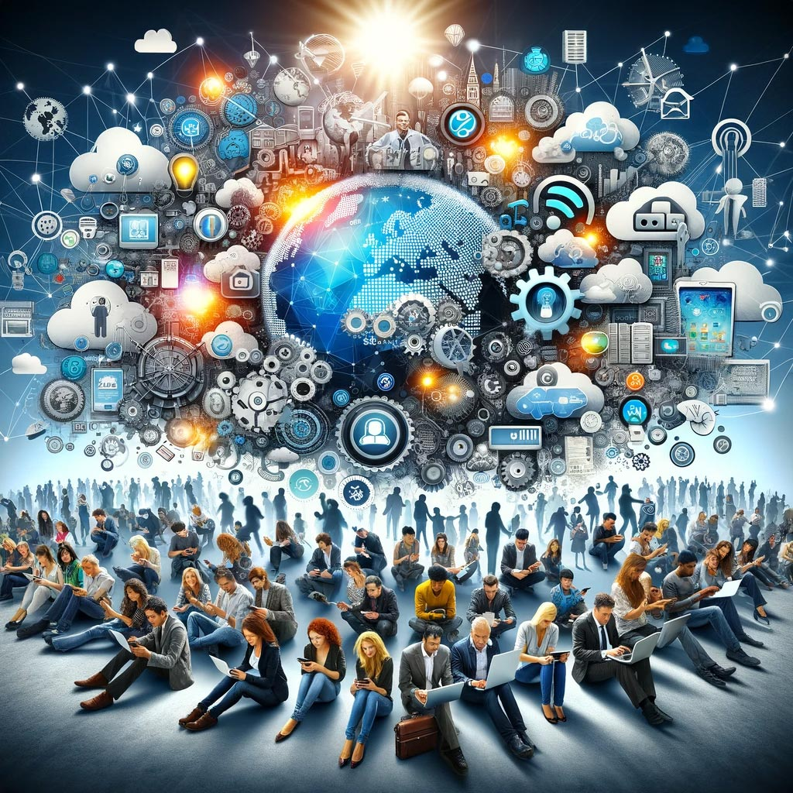
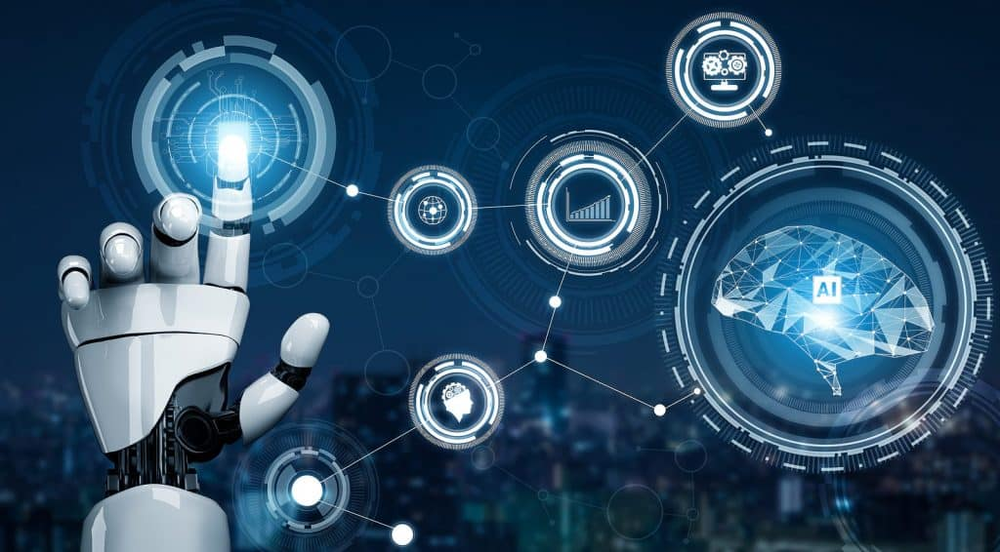

Introduction
Technology plays a big role in our society, shaping how we communicate, work, and live.
How Technology Helps Us
Technology is helpful in key areas like communication, education, and work But alos benefits us in many other ways.
In our busy lives today, technology is everywhere and affects everything we do. From waking up to going to sleep, we experience many tools and devices that make life better. This piece details how technology is helpful in key areas like communication, education, and work.
The first is changing communication, one big way technology helps us is by changing how we talk. We no longer need to send letters or use landline phones to stay in touch. Now, we can use messaging apps, social media, and video calls to talk to anyone, anytime, anywhere. This makes it easy for families and friends to connect, no matter how far apart. For example, someone in one country can video call a loved one miles away and share moments in real-time. This closeness builds relationships and helps us feel more connected.
The second is that improving education is that technology has also changed how we learn. With online learning, students can find a lot of information from home. Tools like videos, quizzes, and discussion boards make learning fun and accessible to all. Students can learn at their speed, going back to tough topics or speeding through easy ones. This way of learning fits different styles and helps every student do well. Also, teachers can use technology to improve their lessons. Smartboards, education apps, and virtual reality experiences make learning exciting and spark creativity.
The third is that increasing work is in jobs, technology has changed how we work together. Project management tools, cloud storage, and communication apps help organize tasks and improve teamwork. Employees can easily share documents, assign work, and communicate, no matter where they are. Automation also helps by taking care of repetitive tasks, allowing workers to focus on more important and creative work. This boosts efficiency and makes jobs more fulfilling.
Technology greatly improves our lives in many ways. From making communication and education better to increasing work productivity, its benefits are clear. As we embrace new tech, we also need to use these tools wisely and ethically. By doing this, we can make the most of technology and build a brighter, more connected future for everyone.
The Effects of Technology on Society
Despite its benefits, technology also raises concerns like advances in healthcare, economic changes, and cultural changes.
Today, technology is a big part of our lives, changing many aspects of how we live. It affects how we communicate, learn, receive healthcare, and have fun. This essay looks at how technology impacts society, showing both the good and the challenges it brings.
The first is that advances in healthcare are the technology's influence on healthcare is another important area. Telemedicine allows patients to talk to doctors without needing to go in person, which is especially helpful for people in rural areas or those who have trouble moving. Wearable devices like fitness trackers help people keep track of their health. They give useful information about exercise, heart rate, and sleep, encouraging healthier habits. Moreover, new medical technology, like robotic surgeries and AI in diagnosis, improves patient care. However, using technology in healthcare raises questions about data privacy and whether we might depend too much on automated systems.
The second is that economic changes are that technology has changed the economy, creating new jobs while making some old ones disappear. Automation and AI have made work processes faster and more efficient. For instance, factories use robots to produce goods more quickly and at a lower cost. But this shift can also create problems. As machines take over routine tasks, workers may worry about losing their jobs and need to learn new skills. Training programs are important to help workers keep up in a changing job market. The gig economy, driven by technology, offers flexibility but often lacks job security and benefits.
The third cultural change is that technology has also affected culture in society. Social media has changed how we get news and interact with current events. Information spreads quickly online, helping people stay updated on global issues. However, this speed can sometimes lead to misleading information and sensational stories, making it hard for people to tell which sources are trustworthy. Additionally, technology has helped spread culture around the world. People can enjoy music, movies, and art from different cultures, which encourages understanding. But this can also make local cultures less visible as global trends take over.
Technology has a big effect on society, changing how we communicate, learn, receive healthcare, and connect with the world. While it offers many benefits like better access and efficiency, it also presents challenges that we need to think about. As we move forward in this technological world, it is important to find a balance between embracing new ideas and considering the social, ethical, and economic issues that come with them. By doing this, we can use technology to build a fairer and more connected society for future generations.
Balancing Technology's Influence
Technology is a powerful tool, but it’s up to us to use it wisely. By balancing the benefits with the risks, we can create a future where helps society thrive without losing our human connections.